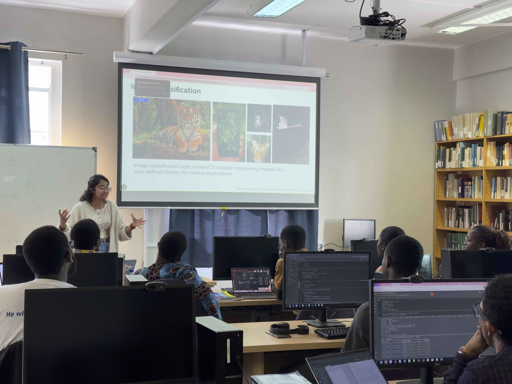
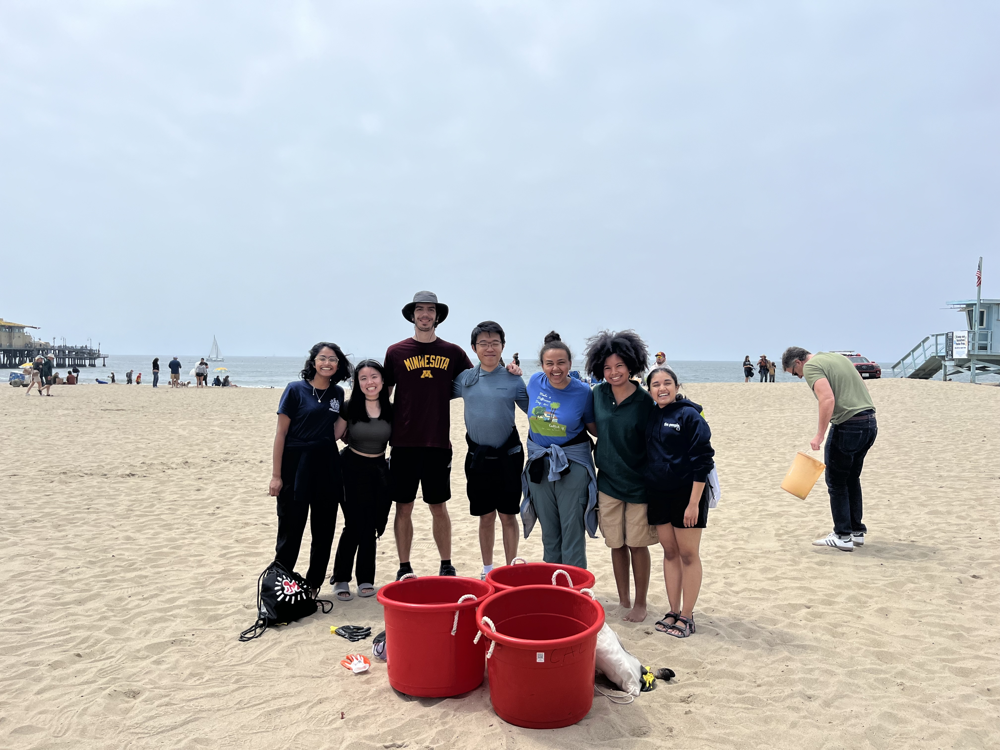
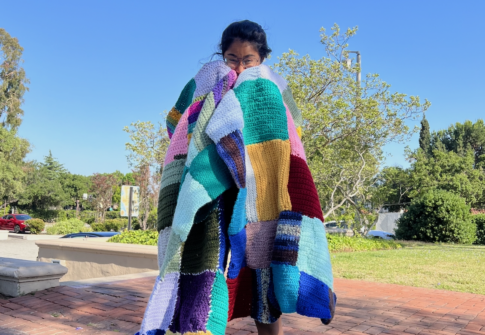

Lecturing Deep Learning for Ecology



In collaboration with my labmate Timm Hauke, I organized and taught a week-long course for 10 students on fundamentals of computer vision and its applications in ecology.
With lectures and in-persion coding workshops providing structure and guidance, I assisted students in research projects leveraging dataset collection, annotation, and
processing strategies to generate an object detection-based African Penguin activity heat-mapping pipeline in collaboration with the Two Oceans Aquarium in Cape Town.
The students were able to conduct a field visit to the aquarium to meet with the staff and collect additional data for the models.
I also led group discussions on open questions in deep learning (multimodality, domain shift, etc.) and the ethical considerations and limitations of AI for conservation.
Visit the course webpage for more information.
Volunteering with the Caltech Y



Beginning my Caltech journey online during the uncertainty of the pandemic, I found a meaningful connection through the Caltech Y and its RISE Program, tutoring Pasadena middle-schoolers in math and science. Helping my student navigate online learning, even from across the country, was a deeply rewarding experience that continued throughout my four years at Caltech. Seeing how much her confidence and passion for learning grew over the years was one of the highlights of my undergrad.
Once on campus, I extended this commitment through helping coordinate an annual Make-a-Difference Day, organizing science talks and lab tours for underrepresented students, and joined Reading Partners, where mentoring a young student reignited my own love for reading.
I hosted a Project Linus event to crochet blankets for children in need. This effort drew enthusiastic participation, with housemates learning to crochet and creating quilts that symbolized our collective impact. These experiences deepened my commitment to service and connection.
Over the my year as President of the Y’s ExComm, I expanded programming to foster inclusivity, collaboration, and exploration. From cultural cuisine tours and financial literacy workshops to the most successful Make-a-Difference Day in a decade, we doubled participation through campus-wide partnerships and innovative initiatives. I’m most proud of creating the Y Representative role to enhance our campus presence and spearheading efforts to support students with financial need in travel programs, all while strengthening bonds within our team and the community. As a member of the Board of Directors, made executive decisions regarding funding and mission of the non-profit.
Other Leadership
I firmly believe that science should be made accessible to all, and I am passionate about actively integrating outreach and mentorship to increase diversity and inclusion in my field throughout my Ph.D.
In my time as a Title IX Advocate, Diversity Representative, and Peer Advocate at Caltech, I was able to connect my housemates and peers to available support resources and lend an ear and a hand to hold in difficult times. Currently, I am volunteering with the Big Brothers Big Sisters of Eastern Massachusetts to mentor and pave the path for the next generation of diverse changemakers. I also serve on the Board of MIT's Graduate Women in Course 6 (GW6) as co-president,
seeking to continue to foster a sense of community for underrepresented genders in my department by hosting seminars and social events for my peers.